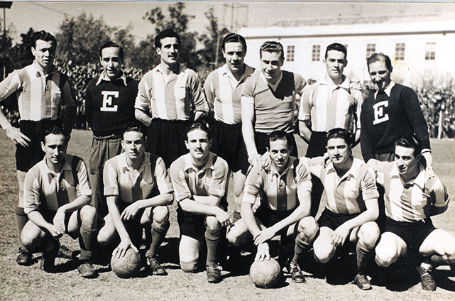

Historia
El Club Estudiantes de La Plata nació bajo la cultura del trabajo, del esfuerzo y del sacrificio individual en pos del bien colectivo. Es la identidad que lo atraviesa, que lo forja y que le da la voluntad necesaria para creer en utopías. Así lo marca su historia, desde la fundación hasta la actualidad.
Fundacion de Estudiantes de La Plata.
1905
Corría el año 1905. El fútbol se insertaba a pasos agigantados en la sociedad argentina, sobretodo en la ciudad de La Plata, flamante capital provincial. Un grupo de jóvenes estudiantes secundarios y universitarios, cansados de ser ninguneados por otras instituciones, decidieron fundar un nuevo club de fútbol con el fin de practicar la actividad en una ciudad que recién se estaba construyendo y poblando. La noche del 4 de agosto se reunieron 20 de esos jóvenes en la zapatería Nueva York, en Avenida 7 entre 57 y 58, y firmaron el acta de fundación.
1906
El primer presidente fue Miguel Gutiérrez, quien consiguió un subsidio de $200 con el que se compraron las primeras equipaciones y los arcos para la práctica. La camiseta fue roja y blanca a bastones desde el comienzo, en homenaje a Alumni (múltiple campeón de la época). El primer campo de juego utilizado por Estudiantes se encontraba entre las calles 19 y 51, donde actualmente se localiza la Plaza Islas Malvinas. Allí debutó como local frente a Nacional Juniors de Buenos Aires, con una victoria por 2-0; aunque tuvo que esperar hasta 1906 para debutar oficialmente en la Asociación Argentina de Fútbol, con un triunfo 11-0 frente a Racing.
Hacia fines de 1906 comenzó el sueño aún vigente de 1 y 57. El Gobierno Provincial cedió las tierras del viejo velódromo del Bosque a través de la gestión de Nazario Robert, funcionario municipal y Presidente del club. El estadio fue inaugurado el 25 de diciembre de 1907, y contaba con una tribuna para 800 personas. Sin embargo, el primer partido de fútbol oficial se realizó en marzo de 1908, cuando Estudiantes derrotó por 2 a 1 a La Plata F.C. Aquel día se vendieron alrededor de mil entradas y fue la primer ocasión que el club cobraba derecho de espectáculo.
1911
Los títulos deportivos no tardaría en llegar: Estudiantes fue campeón del torneo de Cuarta en 1908, en 1911 ascendió a la élite del fútbol argentino y en 1913 se coronó por primera vez campeón nacional. Con una campaña que incluyó 14 triunfos y sólo una derrota, el partido decisivo fue frente a Argentino de Quilmes. El gol del campeonato lo marcó Jorge Hirschi, quien años después se convertiría en presidente de la institución. La época del amateurismo estuvo marcada por una clara diferencia sobre el clásico rival, Gimnasia: de 14 partidos jugados, Estudiantes sólo perdió uno.
Durante el mandato de Hirschi, el club creció de forma exponencial, alcanzando la cifra de 8000 socios. Además, la cancha de 1 y 57 incorporó el alambrado olímpico, tribunas de 20 tablones, una pileta olímpica, un restaurante y el embalsado y embellecimiento del predio.
1931
Los profesores y el comienzo de una escuela.
Los comienzos de la era profesional del fútbol argentino tuvieron a Estudiantes en los primeros planos a nivel nacional. Fue la época de "Los Profesores", la delantera más temida y admirada de aquel momento. De memoria, como a cualquier pincharrata le saldría: Lauri, Scopelli, Zozaya, Ferreira y Guaita. En el año 1931 el equipo culminó en la 3° posición y convirtió nada menos que 104 goles, aunque no fue campeón debido a algunos fallos arbitrales que lo privaron del título. Algunos de sus integrantes lograron récords: Zozaya marcó el primer gol en la era profesional, Guaita anotó el primer penal y el arquero Scandone contuvo el primer remate desde los doce pasos. Además, el ADN pincharrata se hizo presente en la Selección Argentina, ya que Manuel "Nolo" Ferreira fue capitán durante el Mundial de Uruguay 1930.
1935
En el año 1935, y ya con los "Profesores" en el recuerdo inmediato, la Comisión Directiva apostó por ampliar al club en materia de infraestructura, en desmedro del ámbito futbolístico. El presidente Conrado Bauer decidió fusionar al Club Atlético Estudiantes con una pequeña institución llamada Social La Plata, para dar forma a la denominación utilizada hasta hoy en día: Club Estudiantes de La Plata. A su vez, se incorporó la sede de calle 53 entre 7 y 8, y se impulsaron deportes alternativos debido a la creciente masa societaria. Sobre el final de la década del ’30, se practicaba básquet (masculino y femenino), tenis, natación, judo, gimnasia artística, atletismo, pelota paleta y ajedrez.
1940
En la década del ’40, la entidad albirroja no dejaría de crecer ediliciamente: durante la gestión de Pedro Osácar se amplió la sede hasta llegar a los 5 pisos y se construyó allí mismo una piscina climatizada. También se agregaron alrededor de mil plateas al estadio de 1 y 57, y se crearon las pensiones para los juveniles que vinieran a probar suerte al club. En la actualidad, el gimnasio de la sede social lleva el nombre de Pedro Osácar.
1944
En concordancia con el crecimiento patrimonial, Estudiantes comenzó a hacerse un nombre en el ámbito futbolístico internacional mediante la realización de distintas giras a países como México, Paraguay y Uruguay. Obtuvo la Copa Escobar en el año 1944, y en 1946 ganó la Copa de la República, antecedente directo de la actual Copa Argentina. Durante esta década, grandes figuras vistieron la camiseta pincha: Manuel Pelegrina –máximo goleador histórico del club con 235 goles, máximo anotador en clásicos con 11 conquistas y más partidos disputados con 489 encuentros- Beto Infante – 180 goles y reconocido por la FIFA como el inventor de la "rabona"- y el arquero Gabriel Ogando, entre tantos otros.
1960
"A la gloria no se llega por un camino de rosas."
La época mas gloriosa en la historia de Estudiantes está marcada por dos revoluciones: la revolución futbolística y la social, ambas teniendo a Mariano Mangano como punto de partida. El 2 de enero de 1960 tomó las riendas del club para conducirlo en un contexto cuanto menos preocupante: economía en rojo, pobres campañas futbolísticas y una institución sin un rumbo fijo.
1963
Tras un par de años de gestión y con las cifras encaminadas, en 1963 puso en marcha el cambio futbolístico: contrató a Miguel Ignomiriello como encargado de la preparación futbolística de las divisiones menores. En sólo dos años, el técnico logró sacar campeón a "La Tercera que mata", equipo que conformaban jugadores traídos por Ignomiriello como Aguirre Suárez, Echecopar, Manera, Poletti, entre otros; y juveniles del club como la Bruja Verón y Cacho Malbernat. Este cambio vino aparejado de infraestructura acorde a lo necesario: cancha auxiliar con iluminación, utilería integral, consultorio médico y concentraciones con doble turno de trabajo.
1965
Pero la principal revolución futbolística de la época se dio de la mano de Osvaldo Zubeldía. El técnico juninense firmó su contrato en enero de 1965, junto a Argentino Geronazzo como ayudante de campo, Jorge Kistenmacher en la preparación física y el Dr. Marelli. Formó su equipo con los pibes que conformaron la "Tercera que mata", sumado a algunos refuerzos como Bilardo, Madero, Conigliaro y Ribaudo. Cambió el paradigma de entrenamiento reinante: trabajos a doble y triple turno, concentraciones maratónicas, alimentación, vestimenta. Además introdujo la marcación hombre a hombre, la jugada del offside e ideó jugadas de pelota parada con gran resultado, entre tantas otras cosas. En las largas jornadas de entrenamiento se fue formando esa característica intangible, ese plus que caracteriza a Estudiantes: la mística.
1967
Repasar los títulos conseguidos en esta era dorada del club es repetitivo, pero necesario para concebir la magnitud de lo realizado por Zubeldía y sus muchachos: cortó la hegemonía de los denominados "equipos grandes" en el Metropolitano ’67, al derrotar en la final a Racing por 3-0. Se coronó tricampeón de la Copa Libertadores de América en los años ’68, ’69 y ’70, y realizó una de las gestas más grandes en la historia del club y del fútbol argentino: salir campeón Intercontinental al ganarle al Manchester United, nada menos que en el mítico Old Trafford. Además, ganó la Copa Interamericana frente al Toluca en 1969.
El crecimiento futbolístico fue directamente proporcional al crecimiento patrimonial y edilicio. Mangano soñaba con un predio para la preparación física de los futbolistas, con un área deportiva con piscina e instalaciones de todo tipo para el uso y esparcimiento de socios e invitados. Hacia fines de 1967, se compraron las primeras 45 hectáreas en City Bell, localidad del norte del partido de La Plata. La financiación se logró a través de los llamados "Títulos patrimoniales", puestos a la venta para toda la masa societaria, estimada en 78.000 socios. Tiempo después, Mangano comprometió parte de su patrimonio para anexarle al Country un campo donde estaba la vieja casona, que devino en la histórica concentración del equipo campeón. Al día de hoy, el Country cuenta con una de las piscinas más grandes de la región, canchas de fútbol para el primer equipo y para las Inferiores, canchas de césped sintético, canchas de tenis, los edificios relacionados al Colegio y espacios para la recreación.
1982
El retorno a las fuentes.
Luego de más de una década de vaivenes institucionales y futbolísticos, con equipos poco efectivos que no llegaron a pelear torneos, empezaría la reconstrucción de Estudiantes. A principios de 1982 Carlos Salvador Bilardo tomó las riendas del equipo, conformado con una base formada por juveniles y con refuerzos como Sabella y Trobbiani, entre otros. Durante el Nacional ’82 Estudiantes fue consolidándose como un equipo competitivo, para triunfar posteriormente en el Metropolitano del mismo año como un campeón que sabía jugar, ganar y gustar. Entre los once habituales titulares destacaban tres "enganches" como Sabella, Trobbiani y Ponce.
1983
Al año siguiente se dio el bicampeonato. Ya con Bilardo en la Selección Argentina, Eduardo Manera se hizo cargo de la máquina que era aquel equipo. En la final del Torneo Nacional derrotó a Independiente por sumatoria de goles, ya que en la ida ganó como local 2-0 y en la vuelta perdió 1-2. Aquel gol de Trama en la Doble Visera valió un campeonato.
2006
El ciclo en la historia de Estudiantes se repitió: tras una época de gloria y títulos, sobrevino una etapa de crisis institucionales y deportivas. Luego de más de 23 años sin bordar una estrella en el pecho, y con la vuelta de un hijo pródigo como Juan Sebastián Veron, Estudiantes salió campeón del Torneo Apertura 2006. Aquel equipo dirigido por Diego Simeone fue una verdadera máquina que hilvanó diez triunfos consecutivos, le marcó siete goles a Gimnasia y se quedó con el campeonato en una final histórica frente a Boca, que ganó 2-1 con goles de José Sosa y Mariano Pavone. Como si fuera poco, tuvo la valla menos vencida.
2009
En marzo del 2009, al igual que en aquella década del ’60, se tomó una decisión que cambió la historia del club: la contratación como director técnico de Alejandro Sabella, aquel zurdo habilidoso que había salido campeón en los ’80 como jugador. Luego de un comienzo sinuoso en la Copa Libertadores, Sabella enderezó el rumbo hasta transformar al equipo en un conjunto equilibrado, pero sin resignar la vocación ofensiva. Fue campeón la noche del 15 de julio de 2009, tras derrotar 2-1 al Cruzeiro brasilero en el Mineirao, con goles de Gastón Fernández y Mauro Boselli. El capitán-y actual presidente- Juan Sebastián Veron fue elegido como mejor jugador de América, y Mauro Boselli fue el goleador de la Copa. Con la obtención del título, se convirtió en el cuarto equipo más laureado en esta competición, con 4 conquistas.
2010
El proceso de Sabella continuó el año siguiente, y volvió a dar sus frutos en el Apertura 2010. Con un equipo equilibrado y contundente, Estudiantes bordó su 5° estrella nacional, tras derrotar a Arsenal en la última fecha con goles de Rodrigo López. Sumó 45 puntos, perdió sólo dos partidos y tuvo la valla menos vencida.